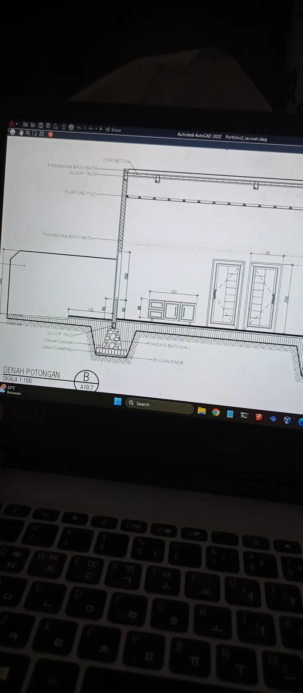
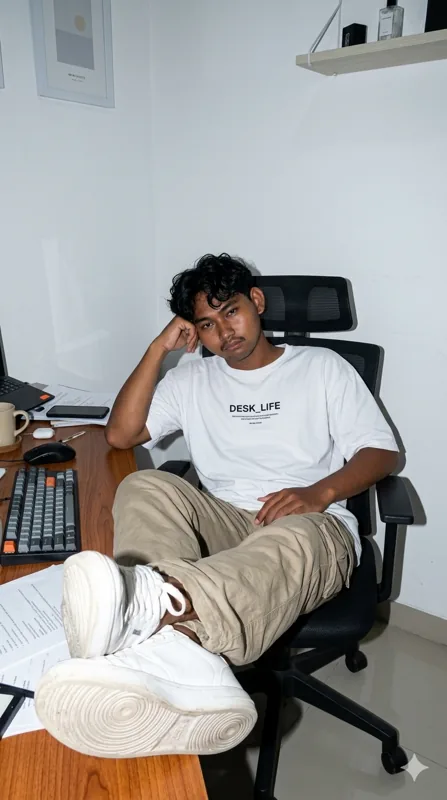
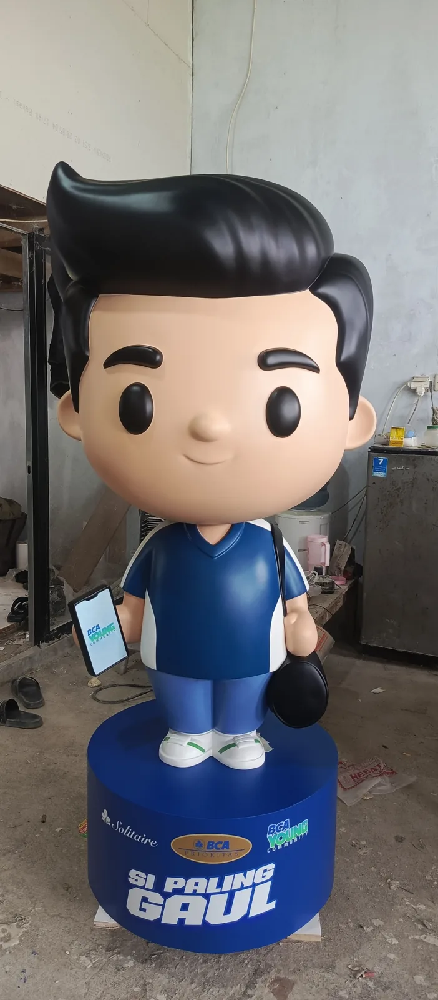

Gambar Kerja AutoCAD
Gambar kerja bangunan berisi denah, tampak, dan potongan.
Lulusan SMK Negeri 1 Gantar Jurusan Desain Pemodelan dan Informasi Bangunan (DPIB). Yang teliti, bertanggung jawab, dan terbiasa bekerja dengan detail. Saya menggabungkan kemampuan teknis ketelitian, dan pengalaman lapangan untuk menghasilkan pekerjaan yang rapi dan berkualitas.
Scroll Ke Bawah Bang
Saya lulusan SMK Negeri 1 Gantar jurusan Desain Pemodelan dan Informasi Bangunan (DPIB). Di sekolah saya belajar membuat gambar kerja, denah, tampak, potongan, dan model 3D bangunan. Saya terbiasa mengecek ukuran dan detail sebelum gambar dikirim, supaya hasilnya rapi dan bisa langsung dipakai di lapangan.
AutoCAD untuk denah, tampak, potongan, dan detail.
SketchUp dan Revit untuk model dan visualisasi bangunan.
Volume pekerjaan dan RAB sederhana.
Membaca gambar kerja dan mengukur langsung di lokasi.

Gambar kerja bangunan berisi denah, tampak, dan potongan.

Tambahkan deskripsi singkat project ini.
Tertarik bekerja sama? Kirim pesan, saya balas secepatnya.